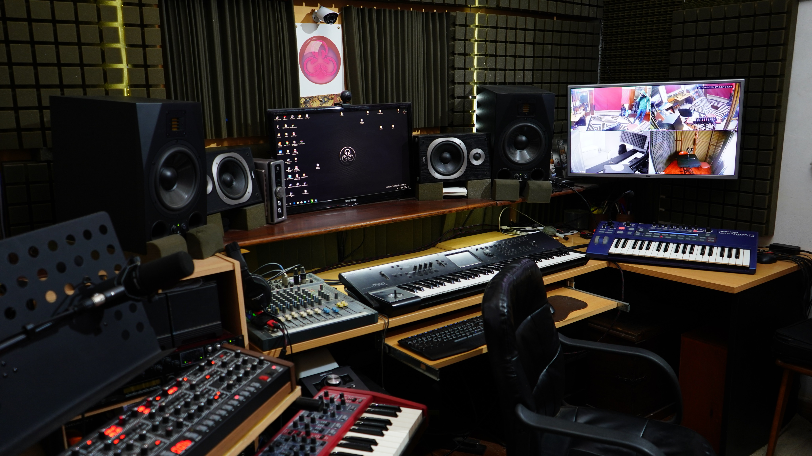
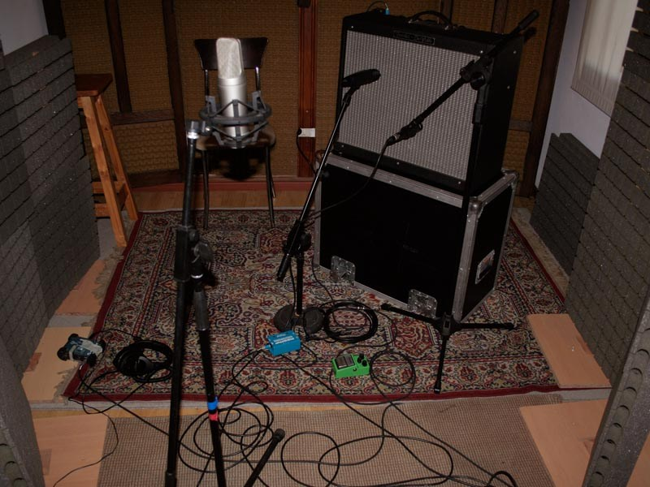
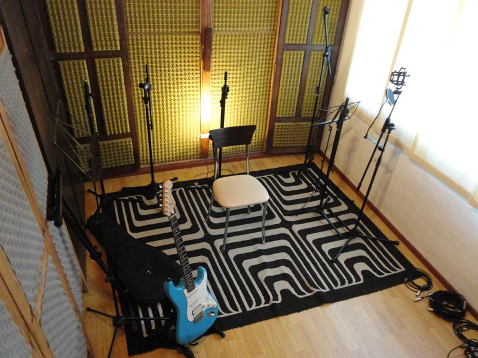
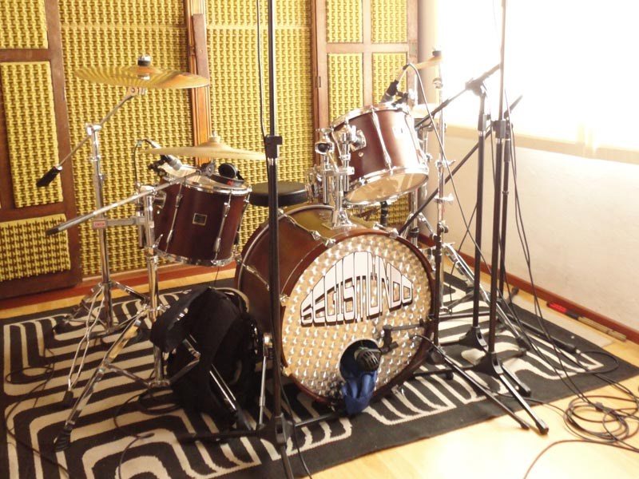

Nuestro estudio de grabación B cuenta con una consola API customizada por Brent Averill, con ecualizadores 550 A, de 32 canales de grabación x 64 canales de mezcla automatizada con moving faders Uptown (P&G) maquina MCI de 24 canales con autolocator III y el Sistema Protools HD3. Hemos adquirido el compresor Obsidian para la mezcla final.




MAQUINA MCI 24 CANALES c / AUTOLOCATOR III
MONITORES TAD
PROTOOLS HD3 32 canales
APOGEE PSX 100
GENELEC 1031
YAMAHA NS10M
MICROFONO Shure SM57
MICROFONO Rode NT2-A
MICROFONO Akg D-22
CONSOLA Sony MDR-V6
CONSOLA Sony MDR-7506